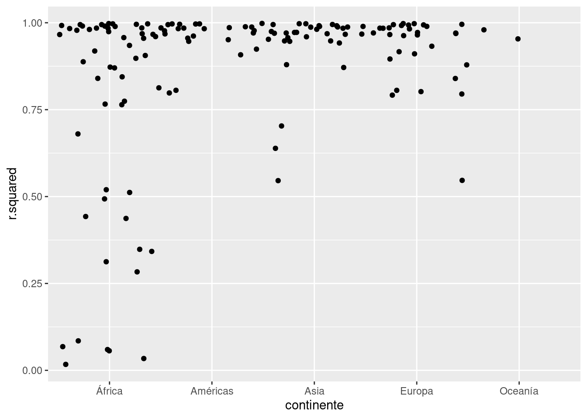
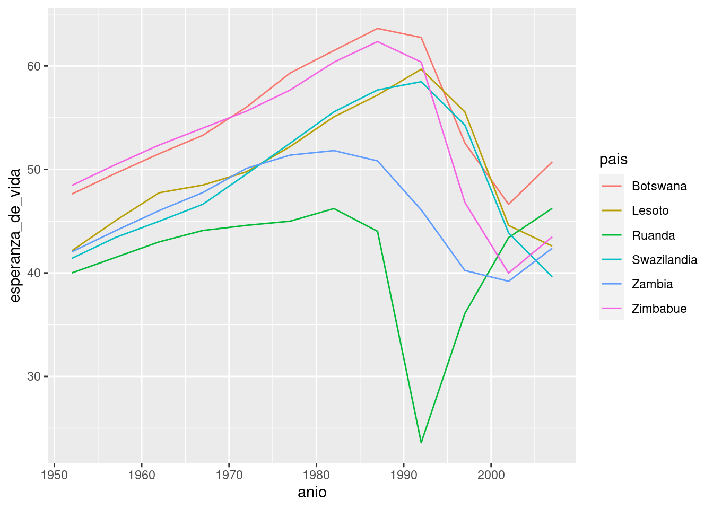

# A tibble: 1,704 × 6
pais continente anio esperanza_de_vida poblacion pib_per_capita
<fct> <fct> <int> <dbl> <int> <dbl>
1 Afganistán Asia 1952 28.8 8425333 779.
2 Afganistán Asia 1957 30.3 9240934 821.
3 Afganistán Asia 1962 32.0 10267083 853.
4 Afganistán Asia 1967 34.0 11537966 836.
5 Afganistán Asia 1972 36.1 13079460 740.
6 Afganistán Asia 1977 38.4 14880372 786.
7 Afganistán Asia 1982 39.9 12881816 978.
8 Afganistán Asia 1987 40.8 13867957 852.
9 Afganistán Asia 1992 41.7 16317921 649.
10 Afganistán Asia 1997 41.8 22227415 635.
# ℹ 1,694 more rows24 Muchos modelos
24.1 Introducción
En este capítulo vas a aprender tres ideas poderosas que te van a ayudar a trabajar fácilmente con un gran número de modelos:
Usar muchos modelos simples para entender mejor conjuntos de datos complejos.
Usar columnas-lista (list-columns) para almacenar estructuras de datos arbitrarias en un data frame. Esto, por ejemplo, te permitirá tener una columna que contenga modelos lineales.
Usar el paquete broom, de David Robinson, para transformar modelos en datos ordenados. Esta es una técnica poderosa para trabajar con un gran número de modelos porque una vez que tienes datos ordenados, puedes aplicar todas las técnicas que has aprendido anteriormente en el libro.
Empezaremos entrando de lleno en un ejemplo motivador usando datos sobre la esperanza de vida alrededor del mundo. Es un conjunto de datos pequeño pero que ilustra cuán importante puede ser modelar para mejorar tus visualizaciones. Utilizaremos un número grande de modelos simples para separar algunas de las señales más fuertes y así poder ver las señales sutiles que permanecen. También veremos cómo las medidas de resumen de los modelos nos pueden ayudar a encontrar datos atípicos y tendencias inusuales.
Las siguientes secciones ahondarán en más detalles acerca de cada una de estas técnicas:
En columnas-lista aprenderás más acerca de la estructura de datos columna-lista y por qué es válido poner listas en data frames.
En creando columnas-lista aprenderás las tres maneras principales en las que crearás columnas-lista.
En simplificando columnas-lista aprenderás cómo convertir columnas-lista de vuelta a vectores atómicos regulares (o conjuntos de vectores atómicos) para que puedas trabajar con ellos más fácilmente.
En haciendo datos ordenados con broom aprenderás sobre el conjunto de herramientas completo provisto por broom (escoba, en inglés) y verás cómo puede ser aplicado a otros tipos de estructuras de datos.
Este capítulo es en cierta medida aspiracional: si este libro es tu primera introducción a R, este capítulo probablemente será un desafío. Requiere que tengas profundamente internalizadas ideas acerca de modelado, estructuras de datos e iteración. Así que no te preocupes si no lo entiendes — solo aparta este capítulo por un par de meses, y vuelve cuando quieras ejercitar tu cerebro.
24.1.1 Prerrequisitos
Trabajar con muchos modelos requiere muchos de los paquetes del tidyverse (para exploración de datos, manejo y programación) y modelr para facilitar el modelado.
24.2 gapminder
Como motivación para entender el poder de muchos modelos simples, vamos a mirar los datos de “gapminder”. Estos datos fueron popularizados por Hans Rosling, un doctor y estadístico sueco. Si nunca has escuchado de él, para de leer este capítulo ahora mismo y revisa algunos de sus videos! Es un fantástico presentador de datos e ilustra cómo puedes usar datos para presentar una historia convincente. Un buen lugar para empezar es este video corto filmado en conjunto con la BBC: https://www.youtube.com/watch?v=jbkSRLYSojo.
Los datos de gapminder resumen la progresión de países a través del tiempo, mirando estadísticos como esperanza de vida y PIB. Los datos son de fácil acceso en R gracias a Jenny Bryan, quien creó el paquete gapminder. Utilizaremos la versión en español contenida en el paquete datos, que incorpora este dataset en el objeto paises.
En este caso de estudio, nos enfocaremos solo en tres variables para responder la pregunta “¿Cómo la esperanza de vida (esperanza_de_vida) cambia a través del tiempo (anio) para cada país (pais)?”. Un buen lugar para empezar es con un gráfico:

Es un conjunto de datos pequeño: solo tiene ~1,700 observaciones y 3 variables. ¡Pero aun así es difícil ver qué está pasando! En general, pareciera que la esperanza de vida ha estado mejorando en forma constante. Sin embargo, si miras de cerca, puedes notar que algunos países no siguen este patrón. ¿Cómo podemos hacer que esos países se vean más fácilmente?
Una forma es usar el mismo enfoque que en el último capítulo: hay una señal fuerte (un crecimiento lineal general) que hace difícil ver tendencias más sutiles. Separaremos estos factores estimando un modelo con una tendencia lineal. El modelo captura el crecimiento estable en el tiempo y los residuos mostrarán lo que queda fuera.
Ya sabes cómo hacer eso si tenemos un solo país:


¿Cómo podemos ajustar fácilmente ese modelo para cada país?
24.2.1 Datos anidados
Te puedes imaginar copiando y pegando ese código múltiples veces; sin embargo, ¡ya has aprendido una mejor forma! Extrae el código en común con una función y repítelo usando una función map del paquete purrr. Este problema se estructura un poco diferente respecto a lo que has visto antes. En lugar de repetir una acción por cada variable, bnhgqueremos repetirla para cada país, es decir, un subconjunto de filas. Para hacer esto, necesitamos una nueva estructura de datos: el data frame anidado (nested data frame). Para crear un data frame anidado empezamos con un data frame agrupado, y lo “anidamos”:
# A tibble: 142 × 3
# Groups: pais, continente [142]
pais continente data
<fct> <fct> <list>
1 Afganistán Asia <tibble [12 × 4]>
2 Albania Europa <tibble [12 × 4]>
3 Argelia África <tibble [12 × 4]>
4 Angola África <tibble [12 × 4]>
5 Argentina Américas <tibble [12 × 4]>
6 Australia Oceanía <tibble [12 × 4]>
7 Austria Europa <tibble [12 × 4]>
8 Baréin Asia <tibble [12 × 4]>
9 Bangladesh Asia <tibble [12 × 4]>
10 Bélgica Europa <tibble [12 × 4]>
# ℹ 132 more rows(Estamos haciendo un poco de trampa agrupando por continente y pais al mismo tiempo. Dado el pais, continente es fijo, así que no agrega ningún grupo más, pero es una forma fácil de llevarnos una variable adicional para el camino.)
Esto crea un data frame que tiene una fila por grupo (por país), y una columna bastante inusual: data. data es una lista de data frames (o tibbles, para ser precisos). Esto parece una idea un poco loca: ¡tenemos un data frame con una columna que es una lista de otros data frames! Explicaré brevemente por qué pienso que es una buena idea.
La columna data es un poco difícil de examinar porque es una lista moderadamente complicada y todavía estamos trabajando para tener buenas herramientas para explorar estos objetos. Desafortunadamente, usar str() no es recomendable porque usualmente producirá un output (salida de código) muy extenso. Pero si extraes un solo elemento de la columna data verás que contiene todos los datos para ese país (en este caso, Afganistán).
# A tibble: 12 × 4
anio esperanza_de_vida poblacion pib_per_capita
<int> <dbl> <int> <dbl>
1 1952 28.8 8425333 779.
2 1957 30.3 9240934 821.
3 1962 32.0 10267083 853.
4 1967 34.0 11537966 836.
5 1972 36.1 13079460 740.
6 1977 38.4 14880372 786.
7 1982 39.9 12881816 978.
8 1987 40.8 13867957 852.
9 1992 41.7 16317921 649.
10 1997 41.8 22227415 635.
11 2002 42.1 25268405 727.
12 2007 43.8 31889923 975.Nota la diferencia entre un data frame agrupado estándar y un data frame anidado: en un data frame agrupado cada fila es una observación; en un data frame anidado, cada fila es un grupo. Otra forma de pensar en un conjunto de datos anidado es que ahora tenemos una meta-observación: una fila que representa todo el transcurso de tiempo para un país, en lugar de solo un punto en el tiempo.
24.2.2 Columnas-lista
Ahora que tenemos nuestro data frame anidado, estamos en una buena posición para ajustar algunos modelos. Tenemos una función para ajustar modelos:
Y queremos aplicarlo a cada data frame. Los data frames están en una lista, así que podemos usar purrr::map() para aplicar modelo_pais a cada elemento:
Sin embargo, en lugar de dejar la lista de modelos como un objeto suelto, lo mejor sería almacenarlo como una columna en el data frame por_pais. Almacenar objetos relacionados en columnas es una parte clave del valor de los data frames, y por eso creemos que las columnas-lista son tan buena idea. En el transcurso de nuestro trabajo con estos países vamos a tener muchas listas en las que tenemos un elemento por país. ¿Por qué no almacenarlos todos juntos en un data frame?
En otras palabras, en lugar de crear un nuevo objeto en el entorno global, vamos a crear una nueva variable en el data frame por_pais. Ese es un trabajo para dplyr::mutate():
# A tibble: 142 × 4
# Groups: pais, continente [142]
pais continente data modelo
<fct> <fct> <list> <list>
1 Afganistán Asia <tibble [12 × 4]> <lm>
2 Albania Europa <tibble [12 × 4]> <lm>
3 Argelia África <tibble [12 × 4]> <lm>
4 Angola África <tibble [12 × 4]> <lm>
5 Argentina Américas <tibble [12 × 4]> <lm>
6 Australia Oceanía <tibble [12 × 4]> <lm>
7 Austria Europa <tibble [12 × 4]> <lm>
8 Baréin Asia <tibble [12 × 4]> <lm>
9 Bangladesh Asia <tibble [12 × 4]> <lm>
10 Bélgica Europa <tibble [12 × 4]> <lm>
# ℹ 132 more rowsEsto tiene una gran ventaja: como todos los objetos relacionados están almacenados juntos, no necesitas manualmente mantenerlos sincronizados cuando filtras o reordenas. La semántica del data frame se ocupa de esto por ti:
# A tibble: 30 × 4
# Groups: pais, continente [30]
pais continente data modelo
<fct> <fct> <list> <list>
1 Albania Europa <tibble [12 × 4]> <lm>
2 Austria Europa <tibble [12 × 4]> <lm>
3 Bélgica Europa <tibble [12 × 4]> <lm>
4 Bosnia y Herzegovina Europa <tibble [12 × 4]> <lm>
5 Bulgaria Europa <tibble [12 × 4]> <lm>
6 Croacia Europa <tibble [12 × 4]> <lm>
7 República Checa Europa <tibble [12 × 4]> <lm>
8 Dinamarca Europa <tibble [12 × 4]> <lm>
9 Finlandia Europa <tibble [12 × 4]> <lm>
10 Francia Europa <tibble [12 × 4]> <lm>
# ℹ 20 more rows# A tibble: 142 × 4
# Groups: pais, continente [142]
pais continente data modelo
<fct> <fct> <list> <list>
1 Argelia África <tibble [12 × 4]> <lm>
2 Angola África <tibble [12 × 4]> <lm>
3 Benin África <tibble [12 × 4]> <lm>
4 Botswana África <tibble [12 × 4]> <lm>
5 Burkina Faso África <tibble [12 × 4]> <lm>
6 Burundi África <tibble [12 × 4]> <lm>
7 Camerún África <tibble [12 × 4]> <lm>
8 República Centroafricana África <tibble [12 × 4]> <lm>
9 Chad África <tibble [12 × 4]> <lm>
10 Comoras África <tibble [12 × 4]> <lm>
# ℹ 132 more rowsSi tu lista de data frames y lista de modelos fueran objetos separados, tendrías que acordarte de que cuando reordenas o seleccionas un subconjunto de un vector, necesitas reordenar o seleccionar el subconjunto de todos los demás para mantenerlos sincronizados. Si te olvidas, tu código va a seguir funcionando, ¡pero va a devolver la respuesta equivocada!
24.2.3 Desanidando
Previamente calculamos los residuos de un único modelo con un conjunto de datos también único. Ahora tenemos 142 data frames y 142 modelos. Para calcular los residuos, necesitamos llamar a la función add_residuals() (adicionar residuos, en inglés) con cada par modelo-datos:
# A tibble: 142 × 5
# Groups: pais, continente [142]
pais continente data modelo residuos
<fct> <fct> <list> <list> <list>
1 Afganistán Asia <tibble [12 × 4]> <lm> <tibble [12 × 5]>
2 Albania Europa <tibble [12 × 4]> <lm> <tibble [12 × 5]>
3 Argelia África <tibble [12 × 4]> <lm> <tibble [12 × 5]>
4 Angola África <tibble [12 × 4]> <lm> <tibble [12 × 5]>
5 Argentina Américas <tibble [12 × 4]> <lm> <tibble [12 × 5]>
6 Australia Oceanía <tibble [12 × 4]> <lm> <tibble [12 × 5]>
7 Austria Europa <tibble [12 × 4]> <lm> <tibble [12 × 5]>
8 Baréin Asia <tibble [12 × 4]> <lm> <tibble [12 × 5]>
9 Bangladesh Asia <tibble [12 × 4]> <lm> <tibble [12 × 5]>
10 Bélgica Europa <tibble [12 × 4]> <lm> <tibble [12 × 5]>
# ℹ 132 more rows¿Pero cómo puedes graficar una lista de data frames? En lugar de luchar para contestar esa pregunta, transformemos la lista de data frames de vuelta en un data frame regular. Previamente usamos nest() (anidar) para transformar un data frame regular en uno anidado; ahora desanidaremos con unnest():
# A tibble: 1,704 × 9
# Groups: pais, continente [142]
pais continente data modelo anio esperanza_de_vida poblacion
<fct> <fct> <list> <list> <int> <dbl> <int>
1 Afganistán Asia <tibble> <lm> 1952 28.8 8425333
2 Afganistán Asia <tibble> <lm> 1957 30.3 9240934
3 Afganistán Asia <tibble> <lm> 1962 32.0 10267083
4 Afganistán Asia <tibble> <lm> 1967 34.0 11537966
5 Afganistán Asia <tibble> <lm> 1972 36.1 13079460
6 Afganistán Asia <tibble> <lm> 1977 38.4 14880372
7 Afganistán Asia <tibble> <lm> 1982 39.9 12881816
8 Afganistán Asia <tibble> <lm> 1987 40.8 13867957
9 Afganistán Asia <tibble> <lm> 1992 41.7 16317921
10 Afganistán Asia <tibble> <lm> 1997 41.8 22227415
# ℹ 1,694 more rows
# ℹ 2 more variables: pib_per_capita <dbl>, resid <dbl>Nota que cada columna regular está repetida una vez por cada fila en la columna anidada.
Ahora que tenemos un data frame regular, podemos graficar los residuos:
Separar facetas por continente es particularmente revelador:
Parece que hemos perdido algunos patrones suaves. También hay algo interesante pasando en África: vemos algunos residuos muy grandes, lo que sugiere que nuestro modelo no está ajustando muy bien. Exploraremos más eso en la próxima sección, atacando el problema desde un ángulo un poco diferente.
24.2.4 Calidad del modelo
En lugar de examinar los residuos del modelo, podríamos examinar algunas medidas generales de la calidad del modelo. Aprendiste cómo calcular algunas medidas específicas en el capítulo anterior. Aquí mostraremos un enfoque diferente usando el paquete broom. El paquete broom provee un conjunto de funciones generales para transformar modelos en datos ordenados. Aquí utilizaremos broom::glance() (vistazo, en inglés) para extraer algunas métricas de la calidad del modelo. Si lo aplicamos a un modelo, obtenemos un data frame con una única fila:
# A tibble: 1 × 12
r.squared adj.r.squared sigma statistic p.value df logLik AIC BIC
<dbl> <dbl> <dbl> <dbl> <dbl> <dbl> <dbl> <dbl> <dbl>
1 0.954 0.949 0.804 205. 0.0000000541 1 -13.3 32.6 34.1
# ℹ 3 more variables: deviance <dbl>, df.residual <int>, nobs <int>Podemos usar mutate() y unnest() para crear un data frame con una fila por cada país:
# A tibble: 142 × 14
# Groups: pais, continente [142]
pais continente r.squared adj.r.squared sigma statistic p.value df
<fct> <fct> <dbl> <dbl> <dbl> <dbl> <dbl> <dbl>
1 Afganistán Asia 0.948 0.942 1.22 181. 9.84e- 8 1
2 Albania Europa 0.911 0.902 1.98 102. 1.46e- 6 1
3 Argelia África 0.985 0.984 1.32 662. 1.81e-10 1
4 Angola África 0.888 0.877 1.41 79.1 4.59e- 6 1
5 Argentina Américas 0.996 0.995 0.292 2246. 4.22e-13 1
6 Australia Oceanía 0.980 0.978 0.621 481. 8.67e-10 1
7 Austria Europa 0.992 0.991 0.407 1261. 7.44e-12 1
8 Baréin Asia 0.967 0.963 1.64 291. 1.02e- 8 1
9 Bangladesh Asia 0.989 0.988 0.977 930. 3.37e-11 1
10 Bélgica Europa 0.995 0.994 0.293 1822. 1.20e-12 1
# ℹ 132 more rows
# ℹ 6 more variables: logLik <dbl>, AIC <dbl>, BIC <dbl>, deviance <dbl>,
# df.residual <int>, nobs <int>(Presta atención a las variables que no se imprimieron: hay mucha información útil allí).
Con este data frame podemos empezar a buscar modelos que no se ajustan bien:
# A tibble: 142 × 14
# Groups: pais, continente [142]
pais continente r.squared adj.r.squared sigma statistic p.value df logLik
<fct> <fct> <dbl> <dbl> <dbl> <dbl> <dbl> <dbl> <dbl>
1 Ruan… África 0.0172 -0.0811 6.56 0.175 0.685 1 -38.5
2 Bots… África 0.0340 -0.0626 6.11 0.352 0.566 1 -37.7
3 Zimb… África 0.0562 -0.0381 7.21 0.596 0.458 1 -39.6
4 Zamb… África 0.0598 -0.0342 4.53 0.636 0.444 1 -34.1
5 Swaz… África 0.0682 -0.0250 6.64 0.732 0.412 1 -38.7
6 Leso… África 0.0849 -0.00666 5.93 0.927 0.358 1 -37.3
7 Cost… África 0.283 0.212 3.93 3.95 0.0748 1 -32.3
8 Sudá… África 0.312 0.244 4.74 4.54 0.0588 1 -34.6
9 Ugan… África 0.342 0.276 3.19 5.20 0.0457 1 -29.8
10 Repú… África 0.348 0.283 2.43 5.34 0.0434 1 -26.6
# ℹ 132 more rows
# ℹ 5 more variables: AIC <dbl>, BIC <dbl>, deviance <dbl>, df.residual <int>,
# nobs <int>Los peores modelos parecieran estar todos en África. Vamos a chequear esto con un gráfico. Tenemos un número relativamente chico de observaciones y una variable discreta, así que usar geom_jitter() es efectivo:

Podríamos quitar los países con un \(R^2\) particularmente malo y graficar los datos:

Vemos dos efectos principales aquí: las tragedias de la epidemia de VIH/SIDA y el genocidio de Ruanda.
24.2.5 Ejercicios
Una tendencia lineal parece ser demasiado simple para la tendencia general. ¿Puedes hacerlo mejor con un polinomio cuadrático? ¿Cómo puedes interpretar el coeficiente del término cuadrático? (Pista: puedes querer transformar
yearpara que tenga media cero.)Explora otros métodos para visualizar la distribución del \(R^2\) por continente. Puedes querer probar el paquete ggbeeswarm, que provee métodos similares para evitar superposiciones como jitter, pero usa métodos determinísticos.
Para crear el último gráfico (mostrando los datos para los países con los peores ajustes del modelo), precisamos dos pasos: creamos un data frame con una fila por país y después hicimos un semi-join al conjunto de datos original. Es posible evitar este join si usamos
unnest()en lugar deunnest(.drop = TRUE). ¿Cómo?
24.3 Columnas-lista
Ahora que has visto un flujo de trabajo básico para manejar muchos modelos, vamos a sumergirnos en algunos detalles. En esta sección, exploraremos en más detalle la estructura de datos columna-lista. Solo recientemente hemos comenzado a apreciar realmente la idea de la columna-lista. Esta estructura está implícita en la definición de data frame: un data frame es una lista nombrada de vectores de igual largo. Una lista es un vector, así que siempre ha sido legítimo usar una lista como una columna de un data frame. Sin embargo, R base no hace las cosas fáciles para crear columnas-lista, y data.frame() trata a la lista como una lista de columnas:
x.1.3 x.3.5
1 1 3
2 2 4
3 3 5Puedes prevenir que data.frame() haga esto con I(), pero el resultado no se imprime particularmente bien:
x y
1 1, 2, 3 1, 2
2 3, 4, 5 3, 4, 5Tibble mitiga este problema siendo más perezoso (tibble() no modifica sus inputs) y proporcionando un mejor método de impresión:
# A tibble: 2 × 2
x y
<list> <chr>
1 <int [3]> 1, 2
2 <int [3]> 3, 4, 5Es incluso más fácil con tribble(), ya que automáticamente puede interpretar que necesitas una lista:
# A tibble: 2 × 2
x y
<list> <chr>
1 <int [3]> 1, 2
2 <int [3]> 3, 4, 5Las columnas-lista son usualmente más útiles como estructuras de datos intermedias. Es difícil trabajar con ellas directamente, porque la mayoría de las funciones de R trabaja con vectores atómicos o data frames, pero la ventaja de mantener ítems relacionados juntos en un data frame hace que valga la pena un poco de molestia.
Generalmente hay tres partes en un pipeline efectivo de columnas-lista:
Creas la columna-lista usando alguna de estas opciones:
nest()osummarise()+list()omutate()+ una función map, como se describe en Creando columnas-lista.Creas otra columna-lista intermedia transformando columnas lista existentes con
map(),map2()opmap(). Por ejemplo, en el caso de estudio de arriba, creamos una columna-lista de modelos transformando una columna-lista de data frames.Simplificas la columna-lista de vuelta en un data frame o vector atómico, como se describe en Simplificando columnas-lista.
24.4 Creando columnas-lista
Típicamente, no tendrás que crear columnas-lista con tibble(), sino a partir de columnas regulares usando uno de estos tres métodos:
Con
tidyr::nest()para convertir un data frame agrupado en uno anidado en el que tengas columnas-lista de data frames.Con
mutate()y funciones vectorizadas que retornan una lista.Con
summarise()y funciones de resumen que retornan múltiples resultados.
Alternativamente, podrías crearlas a partir de una lista nombrada, usando tibble::enframe().
Generalmente, cuando creas columnas-lista, debes asegurarte de que sean homogéneas: cada elemento debe contener el mismo tipo de cosa. No hay chequeos para asegurarte de que sea así, pero si usas purrr y recuerdas lo que aprendiste sobre funciones de tipo estable (type-stable functions), encontrarás que eso pasa naturalmente.
24.4.1 Con anidación
nest() crea un data frame anidado, que es un data frame con una columna-lista de data frames. En un data frame anidado cada fila es una meta-observación: las otras columnas son variables que definen la observación (como país y continente arriba), y la columna-lista de data frames tiene las observaciones individuales que construyen la meta-observación.
Hay dos formas de usar nest(). Hasta ahora has visto cómo usarlo con un data frame agrupado. Cuando se aplica a un data frame agrupado, nest() mantiene las columnas que agrupan tal cual, y envuelve todo lo demás en la columna-lista:
# A tibble: 142 × 3
# Groups: pais, continente [142]
pais continente data
<fct> <fct> <list>
1 Afganistán Asia <tibble [12 × 4]>
2 Albania Europa <tibble [12 × 4]>
3 Argelia África <tibble [12 × 4]>
4 Angola África <tibble [12 × 4]>
5 Argentina Américas <tibble [12 × 4]>
6 Australia Oceanía <tibble [12 × 4]>
7 Austria Europa <tibble [12 × 4]>
8 Baréin Asia <tibble [12 × 4]>
9 Bangladesh Asia <tibble [12 × 4]>
10 Bélgica Europa <tibble [12 × 4]>
# ℹ 132 more rowsTambién lo puedes usar en un data frame no agrupado, especificando cuáles columnas quieres anidar:
# A tibble: 142 × 3
pais continente data
<fct> <fct> <list>
1 Afganistán Asia <tibble [12 × 4]>
2 Albania Europa <tibble [12 × 4]>
3 Argelia África <tibble [12 × 4]>
4 Angola África <tibble [12 × 4]>
5 Argentina Américas <tibble [12 × 4]>
6 Australia Oceanía <tibble [12 × 4]>
7 Austria Europa <tibble [12 × 4]>
8 Baréin Asia <tibble [12 × 4]>
9 Bangladesh Asia <tibble [12 × 4]>
10 Bélgica Europa <tibble [12 × 4]>
# ℹ 132 more rows24.4.2 A partir de funciones vectorizadas
Algunas funciones útiles toman un vector atómico y retornan una lista. Por ejemplo, en [cadenas de caracteres] aprendiste sobre stringr::str_split(), que toma un vector de caracteres y retorna una lista de vectores de caracteres. Si lo usas dentro de mutate, obtendrás una columna-lista:
# A tibble: 2 × 2
x1 x2
<chr> <list>
1 a,b,c <chr [3]>
2 d,e,f,g <chr [4]>unnest() sabe cómo manejar estas listas de vectores:
# A tibble: 7 × 2
x1 x2
<chr> <chr>
1 a,b,c a
2 a,b,c b
3 a,b,c c
4 d,e,f,g d
5 d,e,f,g e
6 d,e,f,g f
7 d,e,f,g g (Si usas mucho este patrón, asegúrate de chequear tidyr::separate_rows(), que es un wrapper alrededor de este patrón común).
Otro ejemplo de este patrón es usar map(), map2(), pmap() de purrr. Por ejemplo, podríamos tomar el ejemplo final de [Invocando distintas functions] y reescribirlo usando mutate():
# A tibble: 3 × 3
f params sims
<chr> <list> <list>
1 runif <named list [2]> <dbl [10]>
2 rnorm <named list [1]> <dbl [10]>
3 rpois <named list [1]> <int [10]>Nota que técnicamente sim no es homogéneo porque contiene tanto vectores de dobles como vectores de enteros. Sin embargo, es probable que esto no cause muchos problemas porque ambos vectores son numéricos.
24.4.3 A partir de medidas de resumen con más de un valor
Una restricción de summarise() es que solo funciona con funciones de resumen que retornan un único valor. Eso significa que no puedes usarlo con funciones como quantile(), que retorna un vector de largo arbitrario:
# A tibble: 15 × 2
# Groups: cilindros [3]
cilindros q
<dbl> <dbl>
1 4 21.4
2 4 22.8
3 4 26
4 4 30.4
5 4 33.9
6 6 17.8
7 6 18.6
8 6 19.7
9 6 21
10 6 21.4
11 8 10.4
12 8 14.4
13 8 15.2
14 8 16.2
15 8 19.2Sin embargo, ¡puedes envolver el resultado en una lista! Esto obedece el contrato de summarise(), porque cada resumen ahora es una lista (un vector) de largo 1.
# A tibble: 3 × 2
cilindros q
<dbl> <list>
1 4 <dbl [5]>
2 6 <dbl [5]>
3 8 <dbl [5]>Para producir resultados útiles con unnest, también necesitarás capturar las probabilidades:
# A tibble: 15 × 3
cilindros p q
<dbl> <dbl> <dbl>
1 4 0.01 21.4
2 4 0.25 22.8
3 4 0.5 26
4 4 0.75 30.4
5 4 0.99 33.8
6 6 0.01 17.8
7 6 0.25 18.6
8 6 0.5 19.7
9 6 0.75 21
10 6 0.99 21.4
11 8 0.01 10.4
12 8 0.25 14.4
13 8 0.5 15.2
14 8 0.75 16.2
15 8 0.99 19.124.4.4 A partir de una lista nombrada
Los data frames con columnas-lista proveen una solución a un problema común: ¿qué haces si quieres iterar sobre el contenido de una lista y también sobre sus elementos? En lugar de tratar de juntar todo en un único objeto, usualmente es más fácil hacer un data frame: una columna puede contener los elementos y otra columna la lista. Una forma fácil de crear un data frame como este desde una lista es tibble::enframe().
# A tibble: 3 × 2
name value
<chr> <list>
1 a <int [5]>
2 b <int [2]>
3 c <int [2]>La ventaja de esta estructura es que se generaliza de una forma relativamente sencilla - los nombres son útiles si tienes un vector de caracteres con los metadatos, pero no ayudan para otros tipos de datos o para múltiples vectores.
Ahora, si quieres iterar sobre los nombres y valores en paralelo, puedes usar map2():
# A tibble: 3 × 3
name value smry
<chr> <list> <chr>
1 a <int [5]> a: 1
2 b <int [2]> b: 3
3 c <int [2]> c: 5 24.4.5 Ejercicios
Lista todas las funciones en las que puedas pensar que tomen como input un vector atómico y retornen una lista.
Piensa en funciones de resumen útiles que, como
quantile(), retornen múltiples valores.¿Qué es lo que falta en el siguiente data frame? ¿Cómo
quantile()retorna eso que falta? ¿Por qué eso no es tan útil aquí?
# A tibble: 15 × 2
cilindros q
<dbl> <dbl>
1 4 21.4
2 4 22.8
3 4 26
4 4 30.4
5 4 33.9
6 6 17.8
7 6 18.6
8 6 19.7
9 6 21
10 6 21.4
11 8 10.4
12 8 14.4
13 8 15.2
14 8 16.2
15 8 19.2- ¿Qué hace este código? ¿Por qué podría ser útil?
24.5 Simplificando columnas-lista
Para aplicar las técnicas de manipulación de datos y visualización que has aprendido en este libro, necesitarás simplificar la columna-lista de vuelta a una columna regular (un vector atómico) o conjunto de columnas. La técnica que usarás para volver a una estructura más sencilla depende de si quieres un único valor por elemento, o múltiples valores.
Si quieres un único valor, usa
mutate()conmap_lgl(),map_int(),map_dbl(), ymap_chr()para crear un vector atómico.Si quieres varios valores, usa
unnest()para convertir columnas-lista de vuelta a columnas regulares, repitiendo las filas tantas veces como sea necesario.
Estas técnicas están descritas con más detalle abajo.
24.5.1 Lista a vector
Si puedes reducir tu columna lista a un vector atómico entonces será una columna regular. Por ejemplo, siempre puedes resumir un objeto con su tipo y largo, por lo que este código funcionará sin importar cuál tipo de columna-lista tengas:
# A tibble: 3 × 3
x tipo largo
<list> <chr> <int>
1 <chr [5]> character 5
2 <int [3]> integer 3
3 <dbl [5]> double 5Esta es la misma información básica que obtienes del método de impresión por defecto de tbl , solo que ahora lo puedes usar para filtrar. Es una técnica útil si tienes listas heterogéneas y quieres remover las partes que no te sirven.
No te olvides de los atajos de map_*() - puedes usar map_chr(x, "manzana") para extraer la cadena de caracteres almacenada en manzana para cada elemento de x. Esto es útil para separar listas anidadas en columnas regulares. Usa el argumento .null para proveer un valor para usar si el elemento es un valor faltante (en lugar de retornar NULL):
# A tibble: 2 × 3
x a b
<list> <dbl> <dbl>
1 <named list [2]> 1 2
2 <named list [2]> 2 NA24.5.2 Desanidando
unnest() trabaja repitiendo la columna regular una vez para cada elemento de la columna-lista. Por ejemplo, en el siguiente ejemplo sencillo repetimos la primera fila 4 veces (porque el primer elemento de y tiene largo cuatro) y la segunda fila una vez:
# A tibble: 5 × 2
x y
<int> <dbl>
1 1 1
2 1 2
3 1 3
4 1 4
5 2 1Esto significa que no puedes simultáneamente desanidar dos columnas que contengan un número diferente de elementos:
# A tibble: 2 × 3
x y z
<dbl> <list> <list>
1 1 <chr [2]> <int [2]>
2 2 <chr [1]> <dbl [1]># A tibble: 3 × 3
x y z
<dbl> <chr> <dbl>
1 1 a 1
2 1 b 2
3 2 c 3# A tibble: 2 × 3
x y z
<dbl> <list> <list>
1 1 <chr [1]> <int [2]>
2 2 <chr [2]> <dbl [1]># A tibble: 4 × 3
x y z
<dbl> <chr> <dbl>
1 1 a 1
2 1 a 2
3 2 b 3
4 2 c 3El mismo principio aplica al desanidar columnas-lista de data frames. Puedes desanidar múltiples columnas-lista siempre que todos los data frames de cada fila tengan la misma cantidad de filas.
24.5.3 Ejercicios
¿Por qué podría ser útil la función
lengths()para crear columnas de vectores atómicos a partir de columnas-lista?Lista los tipos de vectores más comúnes que se encuentran en un data frame. ¿Qué hace que las listas sean diferentes?
24.6 Haciendo datos ordenados con broom
El paquete broom provee tres herramientas generales para transformar modelos en data frames ordenados:
broom::glance(modelo)retorna una fila para cada modelo. Cada columna tiene una medida de resumen del modelo: o bien una medida de la calidad del modelo, o bien complejidad, o una combinación de ambos.broom::tidy(modelo)retorna una fila por cada coeficiente en el modelo. Cada columna brinda información acerca de la estimación o su variabilidad.broom::augment(modelo, data)retorna una fila por cada fila endata, agregando valores adicionales como residuos, y estadísticos de influencia.